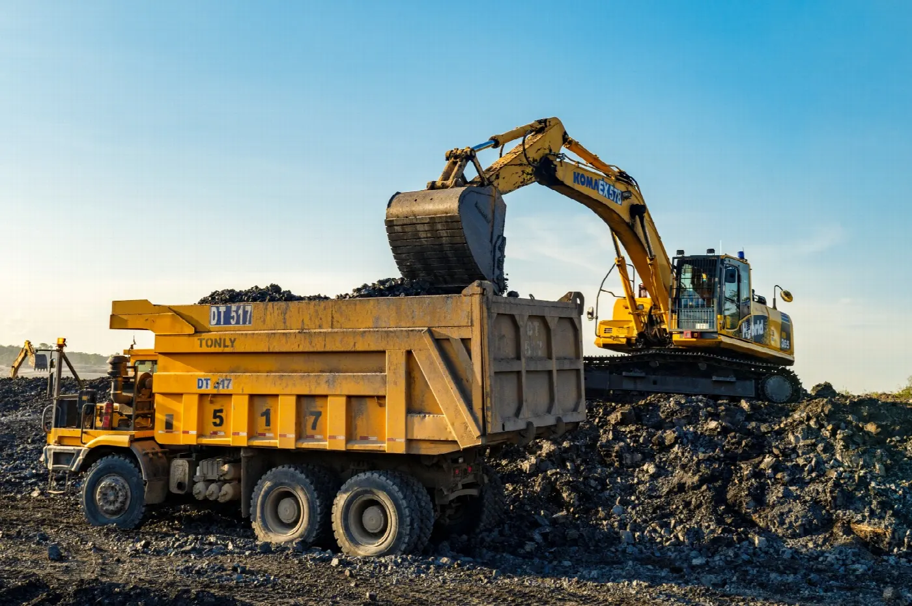

01
Pertambangan batubaraCoal mining
Kegiatan tambang dijalankan oleh PT Tri Oetama Persada, entitas anak yang dimiliki secara tidak langsung melalui PT Bhakti Harapan Sejahtera. Batubara yang dihasilkan melayani kebutuhan dalam negeri dan pasar internasional.Mining is carried out by PT Tri Oetama Persada, a subsidiary held indirectly through PT Bhakti Harapan Sejahtera. Its coal serves domestic demand and international markets.
- Entitas
- Entity
- PT Tri Oetama Persada (70%)
- Lokasi
- Location
- Kalimantan